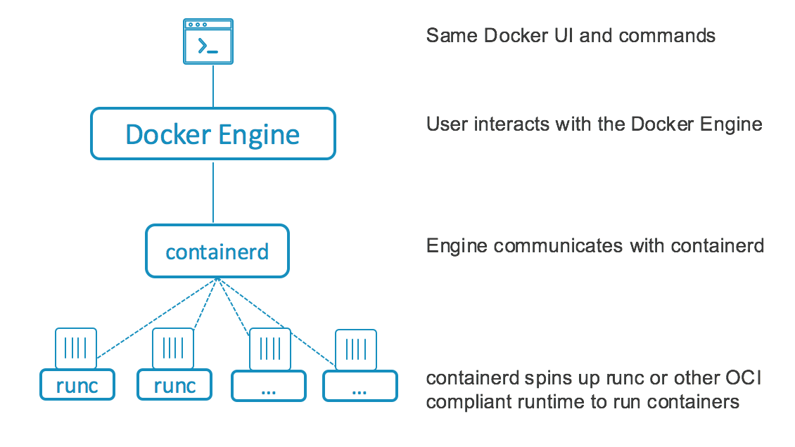
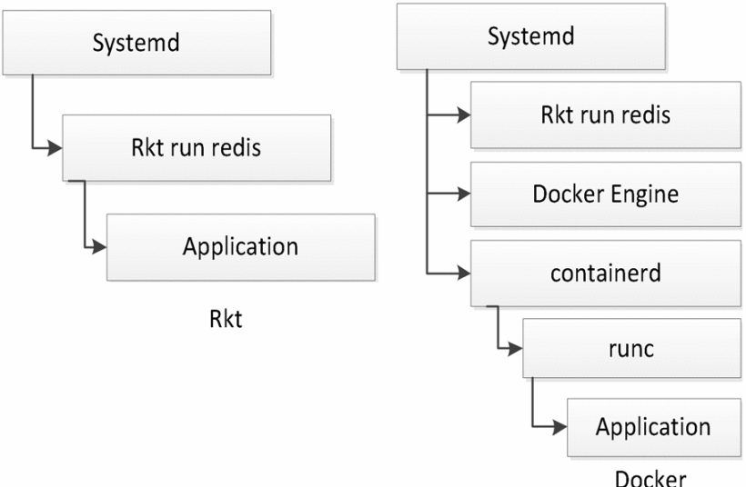
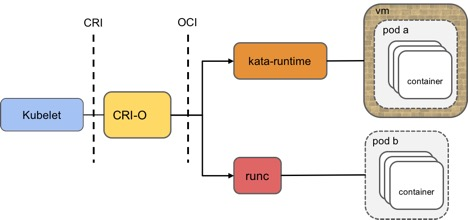
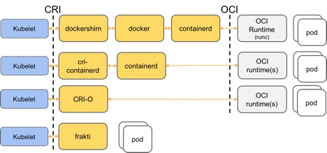

Container Frameworks for Linux
Introduction
Structure
- Technical background
- Container Frameworks
- Comparison
Types of Isolation
- Shared hosting
- chroot
- Full system virtualization
- Operating-system-level virtualization (Containers)
- Hybrid VM containers
What do they have in common?
What are containers?
- namespaces
- cgroups
- seccomp
- MAC (SELinux, AppArmor, …)
Open Container Standardization
- Image Specification
- Runtime Specification
- Container Network Interface Specification
Container Frameworks
OpenVZ
- First containers on Linux
- Custom Linux kernel
- System container
- Checkpointing
LXC/LXD
- Mainline kernel
- System container
- Centralized daemon LXD
- API to integrate into orchestration
Docker
- Easy-to-use interface
- Centralized daemon
- Application container
- Stateless data-independent images
- Image registry
- Build instructions (Dockerfile)
Docker container layers

Docker architecture

runC
- Lightweight
- No centralized daemon
- Part of the OCI
rkt
- Application container
- Encryption and signing of images
- No centralized daemon
- Integrated into systemd
- Different execution drivers
Execution hierarchy Docker and rkt

Kata Containers
- Hybrid VM containers
- Execution inside QEMU/KVM
- Compliance with OCI standards
- Integration into Docker and Kubernetes
Intergration with CRI-O

Intergration into Kubernetes

Other Frameworks
- systemd-nspawnd
- gVisor
- Nabla containers
- Singularity
- Firecracker MicroVM
Comparison
Comparison
| Frame- work | Release | Isolation | Sys/App container | Central daemon | Live migration | Resource quotas | OCI compliant |
|---|---|---|---|---|---|---|---|
| OpenVZ | 2005 | Kernel | System | no | yes | yes | no |
| LXC | 2008 | Kernel | System | no | yes | yes | no |
| Docker | 2014 | Kernel | App | yes | yes | yes | yes |
| LXD | 2016 | Kernel | System | yes | yes | yes | no |
| runC | 2016 | Kernel | App | no | yes | yes | yes |
| rkt | 2016 | Kernel | App | no | no | yes | partial |
| Kata Containers | 2018 | VM | App | no | no | yes | yes |
Integration
| Orchestrator→ Container ↓ | Kubernetes | OpenStack | CloudFoundry | Mesos | Virtuozzo |
|---|---|---|---|---|---|
| OpenVZ | yes1 | yes1 | no | no | yes |
| LXC/LXD | yes | yes | no | no | no |
| Docker | yes | yes | yes | yes | yes2 |
| runC | yes | yes | yes | no | no |
| rkt | yes | yes | no | no | no |
| Kata Containers | yes | yes | no | no | no |
Conclusion
- Docker offers the best user experience
- runC can easily be built upon
- Kata Containers for increased isolation